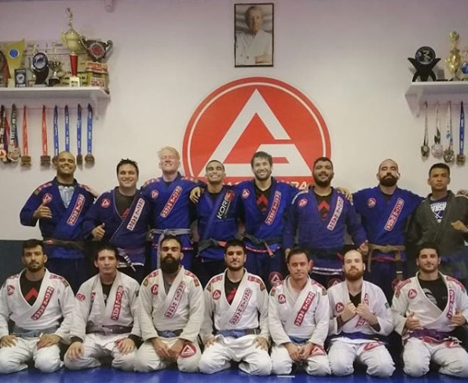
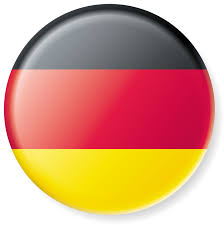

My name is Luís Alberto Luft and I am 24 years old. I am a graduate civil engineer at UFMS but have found programming to be my passion. Apart from programming my life currently revolves around jiujitsu, german, and my family. These key fields are what keep me healthy, articulate and sane. My biggest idol is Jordan B. Peterson, a great person who has helped me chase my dreams and organize my life.
Jiujitsu
Keeps my body healthy and has introduced me to some of my greatest friends. German
A way of keeping my brain plastic while also helping me understand my own language. Family
The center of my life, as most of my decisions are made considering the impact made on the life of my closest ones.